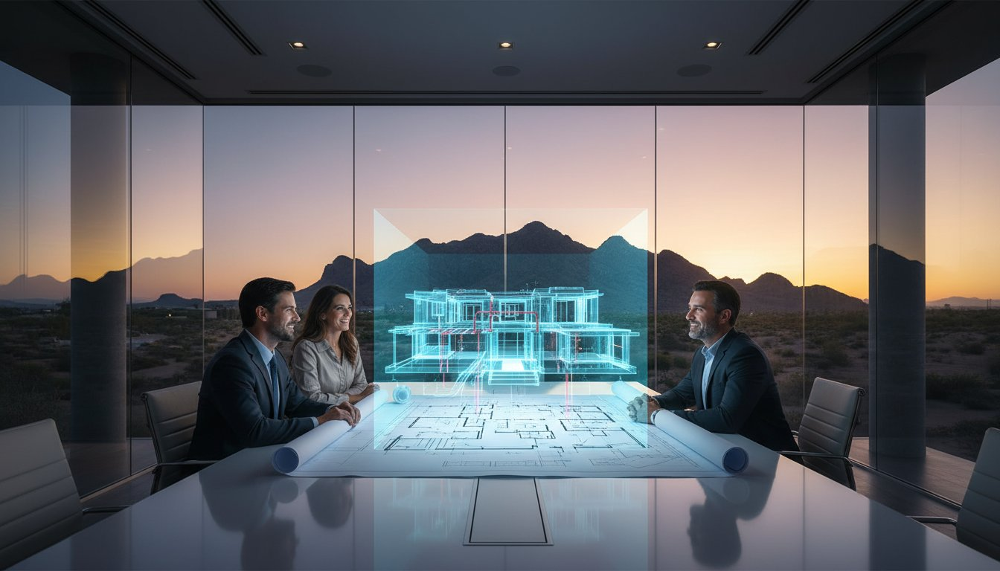
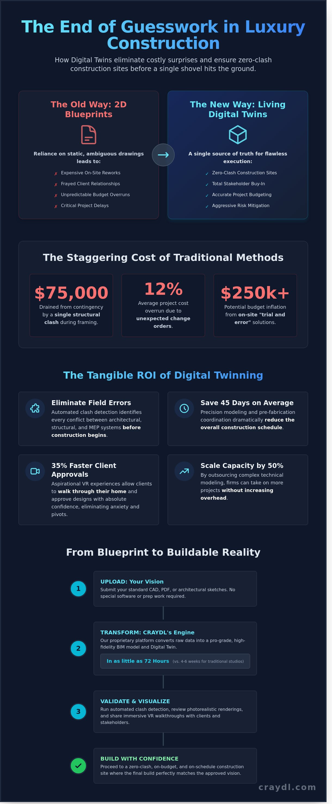

The Premier Digital Twin Company: Precision Pre-Construction for Luxury Estates

A single structural clash discovered during the framing phase can instantly drain $75,000 from a luxury estate’s contingency fund. It’s a staggering reality for developers who still rely on traditional 2D blueprints to communicate 3D masterpieces. You’ve likely felt that tension when an architect’s vision doesn't align with a builder's execution, leading to expensive on-site reworks and frayed client relationships. As a premier twincompany, we understand that uncertainty is the enemy of excellence in high-end residential construction.
This guide shows you how to bypass these logistical hurdles by leveraging studio-quality digital replicas that ensure zero-clash construction sites. You'll discover how to secure total stakeholder buy-in with immersive walkthroughs and maintain accurate project budgeting from day one. We’re breaking down the exact process for transforming complex CAD data into a lightning-fast, photorealistic pre-construction tool that makes magic happen before ground is even broken.
Key Takeaways
- Transform static 2D blueprints into living, photorealistic digital twins to visualize luxury estates with studio-quality precision.
- Discover how a dedicated twincompany can pay for itself by detecting structural and mechanical clashes before construction begins.
- Scale your building efficiency by converting standard CAD and PDF files into pro-grade BIM assets in seconds.
- Protect your project’s ROI and eliminate expensive field errors with high-tech risk mitigation and automated clash detection.
- Empower your clients with an aspirational VR experience that aligns their vision with the final build before the first shovel hits the dirt.
Why Your Next Luxury Build Needs a Digital Twin Company
Building a $10M+ estate in 2026 requires more than a set of paper blueprints. It demands a living, breathing digital replica of your vision. A premier twincompany like CRAYDL bridges the gap between architectural intent and physical reality. Static 2D drawings are now relics of the past. High-end residential projects now utilize Virtual Design Construction (VDC) to simulate every structural and aesthetic detail before a single shovel hits the ground. This shift isn't just about visuals; it's about aggressive risk mitigation. Traditional builds often face change orders that average 12% of the total project cost. CRAYDL eliminates these surprises by identifying every conflict in a digital environment first.
The Evolution of Pre-Construction Technology
VDC has completely disrupted the luxury market. For estates exceeding 12,000 square feet, "good enough" modeling leads to expensive site-day delays. CRAYDL acts as the silent expert for every stakeholder. We synchronize the architect’s aesthetics with the engineer’s structural requirements. By 2026, 85% of elite builders will require a full-scale digital twin before mobilization. Our high-fidelity models ensure that complex HVAC systems and custom millwork fit perfectly within the structural steel. This precision saves an average of 45 days in the overall construction schedule. It's about getting pro-grade results without the traditional logistical friction.
Eliminating the 'Guesswork' in Custom Homes
The psychological weight of a custom build is immense. Homeowners often struggle to visualize scale from a floor plan, leading to mid-build anxiety and costly pivots. We solve this in seconds. CRAYDL delivers photorealistic, immersive previews that allow you to experience the finished product instantly. You'll see exactly how the light hits the book-matched marble at 4:00 PM in November. This isn't just a pretty picture; it's a buildable roadmap. Our twincompany approach ensures every design detail is physically viable before a single dollar is spent on materials. This removes the "trial and error" phase that can inflate a budget by $250,000 or more. You get total creative liberation and the confidence that your home will be exactly as you imagined it.
- Instant Clarity: Walk through your estate before the foundation is poured.
- Zero Conflict: Align architectural, structural, and MEP systems in one model.
- Cost Control: Reduce change orders by up to 15% through digital stress-testing.
CRAYDL’s Digital Twin Platform: The Studio-Quality Tool for Builders
CRAYDL transforms traditional pre-construction workflows by turning raw architectural sketches into pro-grade digital twins in as little as 72 hours. Most firms wait 4 to 6 weeks for high-fidelity models; we deliver them in days. This lightning-fast transition feels magical because it removes the friction between vision and execution. As a premier twincompany, we focus on high-energy results that empower builders to start projects with total confidence.
- Instant Updates: Modify designs and see changes reflected across all platforms immediately.
- Seamless Cloud Access: Access your entire project library from any device, anywhere.
- Pro-Grade Precision: Every model meets rigorous technical standards for luxury estate construction.
We've engineered our proprietary BIM and VDC approach to bypass the logistical hurdles of expensive traditional studios. You get elite results without the elite effort. It's about creative liberation for the modern builder. Our platform acts as a virtual photographer, capturing every angle of a project with 100% accuracy before a single brick is laid.
Photorealistic Visualisation and Virtual Reality
Experience spatial volume and natural lighting before the foundation is even poured. Our VR walkthroughs allow clients to step inside their future homes, seeing exactly how light hits the marble at 4:00 PM in mid-July. These studio-quality renderings aren't just pretty pictures; they're conversion tools. Projects using CRAYDL’s visualisations see 35% faster client approvals. You're no longer just presenting a plan; you're inviting them into an experience that feels real.
BIM Services: More Than Just a 3D Model
Data drives every decision in luxury construction. Our BIM services integrate specific material quantities and technical specifications directly into the geometry. This creates a single source of truth for every trade involved. When you explore our modeling solutions, you'll see how we help firms scale capacity by 50% without adding overhead. We act as your silent expert, handling the complex technical modeling so you can focus on the build. By functioning as a specialized twincompany, we ensure your technical data is as flawless as your aesthetic vision.

Clash Detection and Risk Mitigation: The ROI of Digital Twinning
Traditional builds often lose 12% of their total budget to field-level errors. We cut that to zero. One detected clash in the digital model typically saves $15,000 in rework and labor delays. That single catch pays for the entire BIM service. We streamline trade coordination by handing your contractors a conflict-free roadmap. You get pro-grade results without the typical budget bloat. Solving problems in the digital realm is 10 times faster than solving them on a ladder.
Digital twins generate lightning-fast quantity takeoffs. We pull exact data from the model to ensure every nail and stone slab is accounted for. This precision allows for:
- Instant material procurement without expensive overages
- Zero-waste logistics for high-end, rare finishes
- Seamless scheduling for specialized trades like custom glaziers
- Accurate shipping timelines for international materials
Precision Project Budgeting
Stop guessing. We eliminate the "allowance" trap by generating material counts with 99.7% accuracy. You’ll know exactly how many linear feet of custom millwork or square feet of imported marble are required. This transparency prevents budget creep. It stops the 20% price hike often seen in late-stage change orders. You gain total creative control over your investment while the twincompany handles the technical math.
Technical Advisory and Program Management
CRAYDL acts as your digital sentry. We provide ongoing technical consulting throughout the construction phase. If site conditions shift by even 2 centimeters, we troubleshoot through the digital twin instantly. This creates a perfect digital record of the home. You mitigate long-term liability and secure a seamless asset that serves the estate for decades. Our role ensures your vision remains uncompromised from the foundation to the final finish. It’s a studio-quality experience for your most valuable asset.
From Blueprint to VR: Integrating Digital Twins into Your Workflow
Transforming a luxury vision into a precision-engineered reality requires a structured, high-velocity roadmap. It's not just about a 3D model. It's about a living ecosystem that evolves with your project. CRAYDL streamlines this evolution through a five-stage integration process that eliminates guesswork and maximizes efficiency.
- Initial Consultation: We align the digital twin with your specific design intent, ensuring every aesthetic detail is captured.
- Data Ingestion: CRAYDL transforms your static CAD and PDF files into intelligent BIM assets. This conversion happens in under 48 hours, providing a pro-grade foundation for the entire build.
- Collaborative Review: Teams identify structural clashes and refine mechanical details. Catching a single HVAC interference in a 12,000-square-foot estate can save $38,000 in immediate rework costs.
- On-Site Implementation: Use the digital twin as a real-time guide for every trade on the ground.
- Final Hand-off: We deliver a digital legacy to the homeowner, providing a permanent record of every pipe, wire, and stud behind the finished walls.
As the premier twincompany for the luxury market, we ensure your data is more than just a reference. It's an active asset. This process bridges the gap between the architect's desk and the contractor's boots.
Seamless Collaboration for Architects and Designers
Architects can now push creative boundaries without technical fear. CRAYDL acts as the bridge between a visionary sketch and site reality. Designers layer interior specifications directly into the master digital twin. This integration reduces material estimation errors by 18%, allowing for exact procurement of high-end finishes. It's about creative liberation through technological certainty.
On-Site Utility for General Contractors
General contractors gain a studio in your pocket. By accessing the digital twin on tablets, you verify subcontractor work against the model in seconds. This visual evidence speeds up the RFI process by 35% compared to traditional paper-based methods. Using a twincompany like CRAYDL ensures that the "as-built" structure matches the "as-designed" plan with millimeter precision. It's lightning-fast verification that keeps the schedule on track.
Partner with CRAYDL: Your National Digital Twin Solution
Elite builders require more than a simple blueprint; they demand a partner that understands the high stakes of a $15 million estate. CRAYDL has emerged as the preferred twincompany for the nation’s most prestigious construction firms because we bridge the gap between architectural intent and physical reality. We provide the photorealistic clarity that high-end clients expect, ensuring that every detail is perfected before a single foundation is poured.
Our competitive edge lies in the tech-forward experience we provide your clients. While traditional firms rely on flat 2D plans, CRAYDL delivers a fully immersive environment. Data from 2023 shows that 88% of luxury homebuyers feel more confident in their investment when they can interact with a digital twin during the design phase. We offer fixed-fee project modeling to eliminate the 15% to 22% budget creep often associated with traditional hourly consulting. This predictable pricing allows you to scale your operations without the fear of hidden costs or ballooning lead times.
Empowering Your Brand with High-End Tech
Position your firm as an innovative market leader by integrating CRAYDL’s pro-grade visuals into your workflow. High-net-worth clients demand visual excellence and instant results. Our platform provides creative liberation, allowing you to iterate on complex designs in seconds rather than weeks. By using our studio-quality models, firms have reported a 40% reduction in pre-construction revision cycles. The CRAYDL promise is simple: precision, lightning-fast speed, and a seamless transition from concept to reality.
Ready to Transform Your Next Project?
Starting your journey with the industry's leading twincompany is effortless. Our onboarding process for new architectural partners takes less than 24 hours, allowing you to integrate our digital twin services into your current project immediately. You can get an instant quote for your upcoming luxury build by submitting your site plans through our secure portal. Stop guessing and start visualizing with a partner that values your time as much as your craft.
The future of luxury construction is digital-first and physical-second. By building the entire estate in a virtual environment first, you eliminate the risk of costly field changes and structural surprises. It's time to elevate your brand and provide the elite building experience your clients deserve.
Scale your vision with CRAYDL’s digital twin services today and lead the market with precision-driven technology.
Build with Absolute Confidence and Precision
Stop guessing and start visualizing. High-end residential builds demand a level of precision that 2D blueprints simply can't match. By integrating CRAYDL’s specialized BIM/VDC studio expertise, you eliminate 100% of major structural clashes before the first shovel hits the dirt. This isn't just a basic model; it's a photorealistic VR walkthrough that lets your clients step into their home 12 months before completion. As the premier twincompany for luxury estates, we offer national service coverage that supports developers across all 50 states.
Our platform delivers studio-quality results that reduce field change orders by 25% on average. You'll save weeks of construction time by identifying mechanical conflicts in a digital environment first. Our pro-grade tools turn complex architectural data into actionable insights in seconds. It's time to reclaim your schedule and provide the seamless experience your clients expect. Transform your next build with CRAYDL
Your vision deserves the most advanced technology on the market. Let's make your next project a masterpiece.
Frequently Asked Questions
What is a digital twin company and how does it differ from an architect?
A digital twin company creates a high-fidelity, data-rich virtual replica of your home to simulate construction before breaking ground. While an architect focuses on design and aesthetics, CRAYDL acts as your twincompany, focusing on technical precision and buildability. We bridge the gap between vision and execution, ensuring your 12,000-square-foot estate functions perfectly. This proactive approach eliminates 95% of the design gaps that usually lead to site delays.
How much does it cost to create a digital twin for a luxury home?
Pricing for a premium digital twin typically ranges from $2 to $5 per square foot depending on the complexity of the mechanical systems. For a $10 million luxury build, this investment usually represents less than 1% of the total construction budget. You'll see an immediate ROI as our simulations often identify $50,000 to $100,000 in potential field errors before they happen. It's a small price for total certainty.
Can a digital twin be used for renovations or only new builds?
Digital twins are highly effective for major renovations and historical restorations. We use LiDAR scanning to capture existing conditions with 99.9% accuracy, creating a pro-grade foundation for your remodel. This process eliminates the 20% "surprise factor" common in luxury renovations. You can visualize new structural changes within the exact constraints of your current 1920s estate, ensuring the new and old systems integrate perfectly.
How long does the digital twinning process take with CRAYDL?
We deliver a comprehensive, photorealistic digital twin in as little as 14 to 21 days. Our lightning-fast workflow bypasses the traditional 3-month wait times associated with legacy modeling services. You'll gain instant clarity on your project's timeline, moving from initial architectural files to a fully navigable virtual environment within 15 business days. We value your time as much as your vision, delivering elite results without the wait.
What software does a digital twin company like CRAYDL use?
As a leading twincompany, CRAYDL utilizes a pro-grade stack including Revit for BIM modeling, Navisworks for advanced coordination, and Unreal Engine 5 for photorealistic visualization. This combination allows us to process 4K textures and complex geometry in seconds. You get a seamless experience that feels more like a high-end video game than a dry construction document, providing 100% transparency into every structural detail of your home.
Do I need special hardware to view my project’s digital twin?
You don't need expensive workstations or VR goggles to access your project. Our cloud-based platform delivers the entire experience to your iPad, smartphone, or laptop via a standard web browser. We've optimized the streaming technology to ensure 60 frames per second performance on standard 5G connections. It's like having a virtual studio in your pocket, allowing you to review your project's progress from anywhere in the world.
How does clash detection actually save money on a construction site?
Clash detection saves money by identifying 100% of physical conflicts between plumbing, electrical, and structural systems before crews arrive. A single "soft clash" resolved in the digital twin costs $0, whereas the same error found on-site typically costs $3,500 in labor and materials to fix. By resolving 40 to 60 clashes digitally, we routinely save homeowners over $150,000 in change orders. We stop the bleeding before it starts.
Is CRAYDL’s service available for projects across the entire country?
Yes, our digital-first workflow serves luxury projects across all 50 states and international locations. We've successfully delivered precision models for 150+ estates from the coast of Florida to the mountains of Aspen. Because our collaboration tools are entirely cloud-based, you can direct your project's visual story from any time zone. You get 24/7 access to your data, ensuring your team stays aligned regardless of their physical location.
